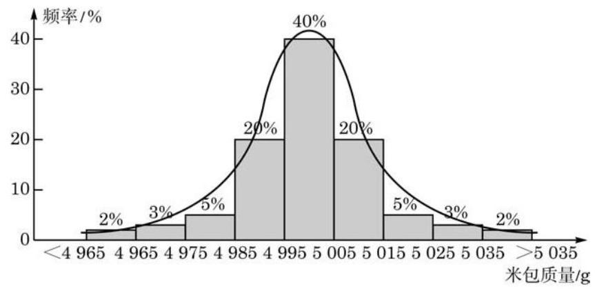
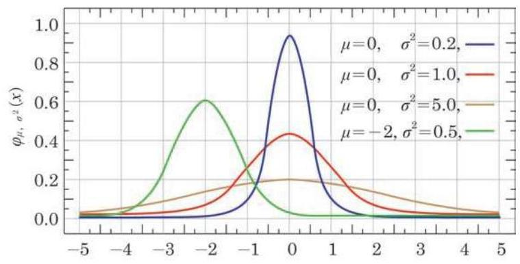
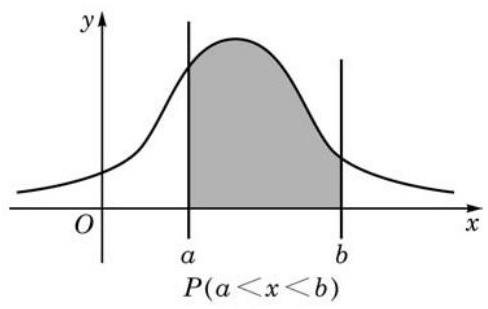
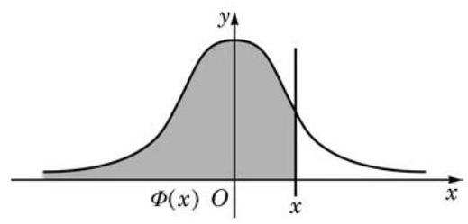
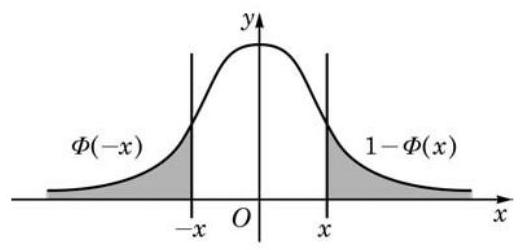

例题 1
例 1 独立地重复 次成功概率为 的伯努利试验,求至少有一次成功的概率.
学生阅读版 / 沪教版高中数学
选择性必修第二册
第7章概率初步(续) · 保留教材主线与原题
教材与正式教参整合
考虑如下问题: 一次测验共有 10 道选择题, 每题备有 4 个选项, 其中只有 1 个正确. 如果某学生随意猜测答题, 问其答对一半以上的概率有多大. 这样的概率计算具有普遍性, 现在就来讨论这种题型的概率计算.
设有一个伯努利试验,其成功概率为 ,失败概率为 ,且 . 独立地重复该伯努利试验 次,用 表示成功的次数. 把 次试验看作具有 个标号的位置,其中每个位置都有两种可能:成功或者失败，分别标记为 1 和 0 . “成功次数为 ” 的事件 可以看作从 个位置里选择 个位置标记为 1,而其他标记为 0,这样的选择共有 种. 因为每次试验都是独立地进行,由独立性,每种标记发生的概率是 . 由概率的可加性,成功次数为 的概率为
其中 . 因为 ,所以 的分布可表示为
从这个角度可以证明二项式定理
独立重复伯努利试验是一个非常重要的概率模型, 在实际中经常出现.
例 1 独立地重复 次成功概率为 的伯努利试验,求至少有一次成功的概率.
例 2 设 服从二项分布 ,求 的期望与方差.
再看另外一个常见的概率模型.
例 3 设袋中装有大小与质地相同的 6 个白球、 4 个黑球. 现在依次不放回地摸 5 个球,用 表示摸出的白球个数. 求 的分布.
例 4 计算例 3 中 的期望.
(1)至少有一张黑桃的概率；
(2)至少有一个对子(两张牌的数字一样)的概率.
现今的信息时代，各媒体都充斥着数据，因此正确地理解数据成为非常重要的事. 正态分布已经是生活中一个常用的词了. 例如, 我们常提起学生的考试成绩是不是正态分布, 某个城市的家庭收入是不是正态分布，等等. 那么，究竟什么是正态分布呢? 平日所说的正态分布, 大体上是指数据对称地分布在某个中心值两边, 且离中心值越远, 分布得越少.
一包米的外包装上标示的质量是 5000 g,但实际上是有误差的. 假设包装米的公司没有故意偷工减料，计量员精确地检测所有在售的该种米, 把米包质量的频率分布直方图画出来, 会是一个什么形状呢? 图 7-3-1 中是一条峰值在 左右的曲线, 它具有一个单峰, 粗略展示了一个正态分布的形状. 实际上, 很多测量数据的分布都呈现出这样的形状.

图 7-3-1
数学中的正态分布是指由下面的函数所表达的分布:
其中有两个参数:
(1) 是该分布的期望或均值；
(2) 是该分布的方差，且总是假设 .

图 7-3-2
为了理解“一个函数所表达的分布”，要说明两点:第一，分布是指总数为 1 的量以某种方式分布在直线上; 第二, 该函数图像与 轴所夹部分的面积等于 1,但这个事实需要用到高等数学的知识才能证明.
定义 设 是一个取实数值的随机变量. 如果对任何给定的实数 与 落在区间 上的概率 等于三条直线: 与正态密度函数图像 所围的区域面积 (或者简称作此函数在该区间上的面积, 如图 7-3-3 所示),那么 服从正态分布 (normal distribution), 或更准确地说, 服从参数为 的正态分布,记为

图 7-3-3

图 7-3-4
这个函数没有简单的表达式, 其函数值可通过近似计算得到. 我们也可以通过某些型号的计算器来查它或者它的反函数的值, 如
容易验证 是一个偶函数,所以该函数在区间 上的面积等于其在区间 上的面积,如图 7-3-5 所示. 此外,由于 与 轴所围面积为 1,因此 满足

图 7-3-5
如果 ,那么将 平移再伸缩后将服从标准正态分布, 即成立
这样,正态分布 的密度函数的图像是一条钟形曲线,它关于直线 对称,其最大值在 处达到. 在 的左侧,函数严格增,而在 的右侧,函数严格减,从而它是一条单峰曲线. 当区间 在 轴上平移时,显然当 处于该区间的中心时,概率 即函数在区间 上的面积达到最大. 因此,我们通常说正态分布集中在其期望 的附近,即参数 表示分布集中的位置.
另外一个参数 描述的是分布的集中程度. 从图 7-3-2 中可以看出,密度函数的最大值在 处达到,其最大值为
它与 成反比. 由于图像与 轴之间的区域的总面积是一个固定值 1,因此当 变小时,最大值变大,钟形变 “高瘦”,分布向中心 处集中; 反之,当 变大时,最大值变小,钟形变 “矮胖”,分布向 的两边分散.
出于种种原因, 在测量的过程中总有误差存在. 通常我们总假设误差是一个服从正态分布的随机变量.
例 5 某公司生产的糖果每包标识质量是 ,但公司承认实际质量存在误差. 已知每包糖果的实际质量服从 、 的正态分布. 问: 随意买一包糖果,其质量误差超过 (即 1%) 的可能性有多大?(结果精确到 0.1%)
例 6 设 为任取的某袋有包装误差的产品的质量, . 分别求 及 的概率. (结果精确到 0.1%)
A. 80 ; B. 100 ; C. 120 ; D. 200.
(1)用 表示这名学生在途中遇到红灯的次数，求 的分布；
(2)求这名学生在途中至少遇到一次红灯的概率.
(1) ；
(2) 与 .